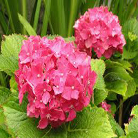
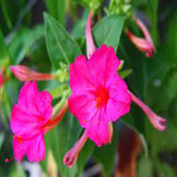
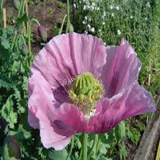

HOBBY - As M
inhas
F
lores
Seleção de flores

Foto 1: Flores de corte

Foto 2: Flor de Mirabilis Jalapa
Foto3: Strelitzia. Flores das aves.

Foto 4: Flor do Ópio.
Foto 5: Rosas
Foto 6: Pensamento
Voltar à Home